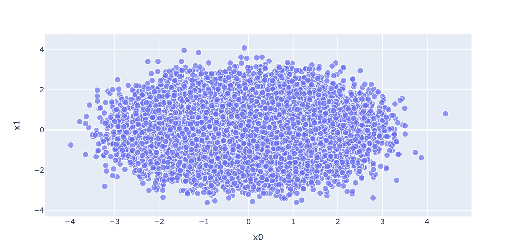

Like most of the population, I listen to music every day: when I’m in the shower, when I’m walking to class, or when I want to process a specific emotion. I enjoy a variety of different genres, especially pop and country. If you played me a pop or country song, I don’t think I’d have a challenge classifying it as one of the two. Genres of music tend to have similar word choice in the lyrics, similar levels of “upbeat-ness,” similar content matters.
In this blog post, I will use Torch to predict the genre of a song based on the track’s lyrics and engineered features.
I will create three neural networks using torch and train them, evaluating each one using unseen validation data.
The first neural network will only use the song lyrics, the second will use engineered features, such as ‘family/gospel’, ‘romantic’, and ‘obscene,’ which contain numerical ratings of how these content matters apply to the song. My third network will use both the lyrics and the engineered features.
Finally, I will investigate the word embeddings learned by my models and consider what biases my model has learned based on songs’ content.
Data Preparation
Load in dataset. We have 31 observations of 28372 songs.
How does this look as tokens? We see the words as their integer representation.
vocab(tokenized)[0:10]
[46, 791, 191, 3, 388, 91, 8594, 3165, 173, 70]
Make a text pipeline to preprocess text data
max_len =30num_tokens =len(vocab.get_itos())def text_pipeline(x):# tokenize input string x tokens = vocab(tokenizer(x))# create a zero tensor of length max_len y = torch.zeros(max_len, dtype=torch.int64) + num_tokens# trim tokens to the first max_len tokensiflen(tokens) > max_len: tokens = tokens[0:max_len]# replace first len(tokens) elements of y with tokenized input y[0:len(tokens)] = torch.tensor(tokens,dtype=torch.int64)return ylabel_pipeline =lambda x: int(x)
Method collate_batch processes a batch of data
def collate_batch(batch): label_list, text_list, feature_list = [], [], []for (_text, _label, _features) in batch:# featire pipeline feature_list.append(torch.tensor(_features))# add label to list label_list.append(label_pipeline(_label))# add text (as sequence of integers) to list processed_text = text_pipeline(_text) text_list.append(processed_text) feature_list = torch.stack(feature_list) label_list = torch.tensor(label_list, dtype=torch.int64) text_list = torch.stack(text_list)return text_list, label_list, feature_list
Create two instances of data loaders for train and test set.
Now we can build our model! First, embed the text, then utilize dropout to prevent neuron dependency, and finish with a fully-connected linear layer.
from torch import nnimport torch.nn.functional as Fclass TextClassificationModel(nn.Module):def__init__(self, vocab_size, embedding_dim, max_len, num_class):super().__init__()self.embedding = nn.Embedding(vocab_size+1, embedding_dim)self.dropout = nn.Dropout(p=0.2)self.fc = nn.Linear(embedding_dim, num_class) def forward(self, x): x =self.embedding(x) x =self.dropout(x) x = x.mean(axis=1) x =self.fc(x)return x
/var/folders/nd/3yjvm85j3rq1vhh53yn6cy0r0000gn/T/ipykernel_21093/2186017985.py:6: FutureWarning: Series.__getitem__ treating keys as positions is deprecated. In a future version, integer keys will always be treated as labels (consistent with DataFrame behavior). To access a value by position, use `ser.iloc[pos]`
feature_list.append(torch.tensor(_features))
/var/folders/nd/3yjvm85j3rq1vhh53yn6cy0r0000gn/T/ipykernel_21093/2186017985.py:6: FutureWarning: Series.__getitem__ treating keys as positions is deprecated. In a future version, integer keys will always be treated as labels (consistent with DataFrame behavior). To access a value by position, use `ser.iloc[pos]`
feature_list.append(torch.tensor(_features))
0.3221145374449339
Neural Network 2: Engineered Features
We were able to effectively classify song genre using just the lyrics. Can we do the same using engineered features – descriptors of topics relavent to the songs?
/var/folders/nd/3yjvm85j3rq1vhh53yn6cy0r0000gn/T/ipykernel_21093/2186017985.py:6: FutureWarning:
Series.__getitem__ treating keys as positions is deprecated. In a future version, integer keys will always be treated as labels (consistent with DataFrame behavior). To access a value by position, use `ser.iloc[pos]`
/var/folders/nd/3yjvm85j3rq1vhh53yn6cy0r0000gn/T/ipykernel_21093/2186017985.py:6: FutureWarning: Series.__getitem__ treating keys as positions is deprecated. In a future version, integer keys will always be treated as labels (consistent with DataFrame behavior). To access a value by position, use `ser.iloc[pos]`
feature_list.append(torch.tensor(_features))
0.24916299559471367
This is only slightly better than baseline. Perhaps lyrics are better and predicting genre, or the model I designedis not strong enough for this task.
Neural Network 3: Lyrics and Engineered Featuers
Can we get high accuracy by combining our previous two neural networks – using both lyrics and engineered features to classify song genre?
class CombinedModel(nn.Module):def__init__(self, vocab_size, embedding_dim, num_features, num_classes):super().__init__()# separate data into text features and engineered features# Text Pipelineself.embedding = nn.Embedding(vocab_size+1, embedding_dim)self.text_fc = nn.Linear(embedding_dim, 128)# Engineered Features Pipelineself.engineered_fc = nn.Linear(num_features, 128)# Combined Layersself.combine_fc = nn.Linear(12928, 64)self.output_fc = nn.Linear(64, num_classes)self.softmax = nn.Softmax(dim=1)def forward(self, text, engineer):# separate x into x_1 (text features) and x_2 (engineered features)# text pipeline: try embedding! text_embed =self.embedding(text) x_1 =self.text_fc(text_embed) x_1 = torch.flatten(x_1, 1)# engineered features: fully-connected Linear layers are fine engineer = engineer.float() x_2 =self.engineered_fc(engineer)# ensure that both x_1 and x_2 are 2-d tensors, flattening if necessary combined = torch.cat((x_1, x_2), dim=1)# pass x through a couple more fully-connected layers and return output combined =self.combine_fc(combined) output =self.output_fc(combined) output =self.softmax(output)return output
/var/folders/nd/3yjvm85j3rq1vhh53yn6cy0r0000gn/T/ipykernel_21093/2186017985.py:6: FutureWarning: Series.__getitem__ treating keys as positions is deprecated. In a future version, integer keys will always be treated as labels (consistent with DataFrame behavior). To access a value by position, use `ser.iloc[pos]`
feature_list.append(torch.tensor(_features))
/var/folders/nd/3yjvm85j3rq1vhh53yn6cy0r0000gn/T/ipykernel_21093/2186017985.py:6: FutureWarning: Series.__getitem__ treating keys as positions is deprecated. In a future version, integer keys will always be treated as labels (consistent with DataFrame behavior). To access a value by position, use `ser.iloc[pos]`
feature_list.append(torch.tensor(_features))
0.2526872246696035
Once again, slighly better than baseline!
Visualize Word Embedding
Text embedding models blindly learn associations between words used in the input text. It would be unsurprising to see this occur in songs, especially considering the tendency for music, especially hip-hop and country, to contain racist and sexist undertones.
# for embedding visualization laterimport plotly.express as px import plotly.io as pioimport numpy as np
fig = px.scatter(embedding_df, x ="x0", y ="x1", size =list(np.ones(len(embedding_df))), size_max =10, hover_name ="word")fig.show()
Unable to display output for mime type(s): application/vnd.plotly.v1+json

PCA graph
It’s a bit hard to make sense of, seeing that we are classifying into 7 categories. However, some of the “outlier” words in our PCA plot seem to be associated with specific genres.
feminine = ["she", "her", "woman"]masculine = ["he", "him", "man"]highlight_1 = ["strong", "powerful", "smart", "thinking", "brave", "muscle"]highlight_2 = ["hot", "sexy", "beautiful", "shopping", "children", "thin"]def gender_mapper(x):if x in feminine:return1elif x in masculine:return4elif x in highlight_1:return3elif x in highlight_2:return2else:return0embedding_df["highlight"] = embedding_df["word"].apply(gender_mapper)embedding_df["size"] = np.array(1.0+50*(embedding_df["highlight"] >0))# sub_df = embedding_df[embedding_df["highlight"] >0]
import plotly.express as px fig = px.scatter(sub_df, x ="x0", y ="x1", color ="highlight", size =list(sub_df["size"]), size_max =10, hover_name ="word", text ="word")fig.update_traces(textposition='top center')fig.show()
Unable to display output for mime type(s): application/vnd.plotly.v1+json
word embedding image
I’m pleased to see not too much association between stereotypically feminine traits and unequivocally feminine words, and same with masculine traits and unequivocally masculine words.
Conclusion
In this blog post, I learned to design neural networks to handle different types of inputs: text input (lyrics), and engineered features. Utilizing machine learning, I was able to create classification models for 7 categories, performing better than the baseline. Finally, I analyzed the word embeddings learned by my model, considering how these came to be.
Neural network models are ubiquitous – perhaps the most commonly used machine learning algorithm. Every time I use fingerprint ID on my phone, or use auto-complete, I’m utilizing neural networks. It’s exciting to begin to understand how these work, and apply them in an interesting way – to music!